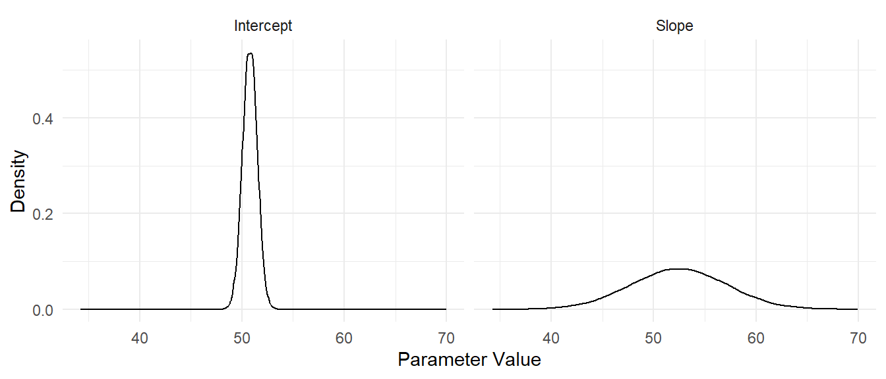
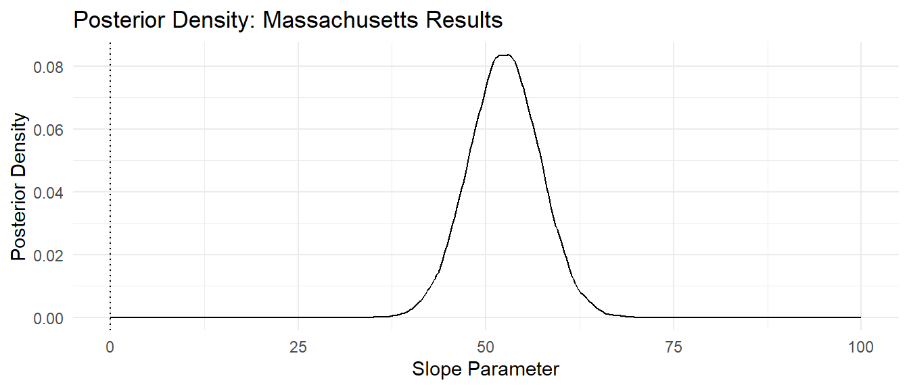
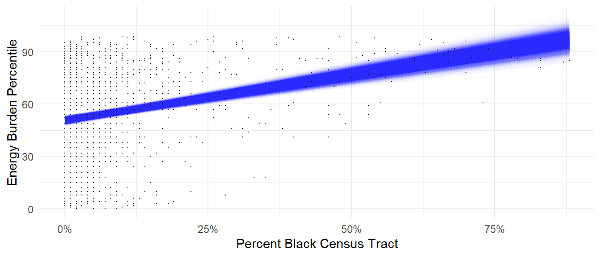
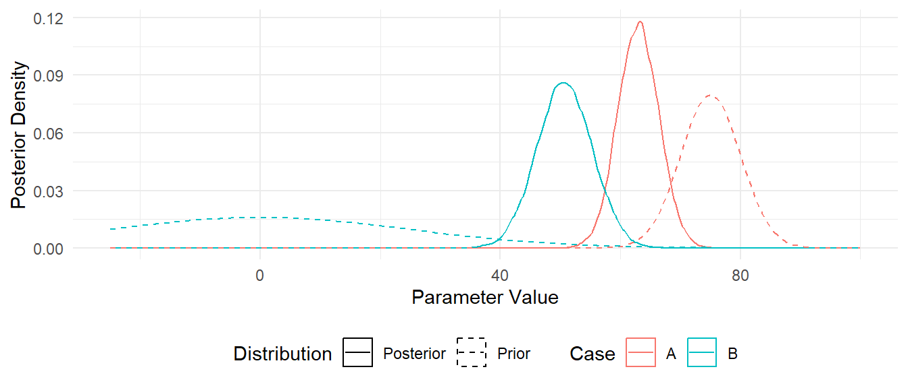

CEJS Activity
Armed with all of that background knowledge on the CEJS dataset and on statistical inference, we can proceed with a detailed analysis of the data. In particular, we are interested in assessing the following hypothesis:
As the population of Black Americans increases (decreases), the level of energy expenditure increases (decreases).
In this part of the session you will interpret results from a statistical model fitted to datasets from different U.S. States.
Overview
Throughout this activity, you will be studying a statistical model fitted to data from the CEJS dataset. As a reminder, we are interested in the Energy Burden Percentile (higher values correspond to a higher burden) and the Percent Black Census Tract (which measures the number of people in a region who are Black).
From this scatterplot, we can see that the energy burden seems to increase as the percent Black increases. However, we can make this rough observation more formal by using a statistical model.
Analyze a Bayesian Model
To analyze the dataset, we will use the following statistical model,
\[ B = m P + b + \epsilon \]
where \(B\) is the energy burden percentile, \(P\) is the percent Black, \(m\) is the slope parameter, \(b\) is the intercept parameter, and \(\epsilon\) is a residual term that represents factors not accounted in the model. The residual term is assumed to be normally distributed \(\epsilon \sim N(0, \sigma^2)\) with an unknown parameter \(\sigma^2\). All three parameters have a prior distribution, defined via
\[ \begin{aligned} m \sim N(\mu_m, \sigma_m^2), \\ b \sim N(\mu_b, \sigma_b^2), \\ \sigma^2 \sim \text{Exponential}(1/s_y), \end{aligned} \]
where \(m, b, \sigma^2\) are independent.1 We will discuss how to set the prior through its parameter values \(\mu_m, \mu_b, \sigma_m^2, \sigma_b^2\) later in this activity.
Study the posterior distribution
Results from a Bayesian model take the form of a posterior distribution for the model parameters. The model has two parameters that are closely related to our hypothesis: The slope \(m\) and intercept \(b\) of the fitted line. “Fitting” the Bayesian model to the Massachusetts dataset will result in a posterior distribution for the parameters, with an example posterior given below:

The posterior distribution helps us determine how confident we should be in conclusions drawn from the model. The next exercise will help you assess confidence in results based on the fitted model.
Assessing confidence
Let’s imagine three different posterior distributions for the posterior (marginal) distribution for the slope parameter \(m\).

Model summaries
General inference
Let’s return to the posterior from our model for the Massachusetts data and use the same reasoning as above to make sense of the results.

Study the posterior predictions
Bayesian analysis does not produce a “best” line; rather, the posterior distribution implies a family of lines (each with a different chance). We call this the posterior predictive distribution. For instance, the following visualizes the posterior predictive distribution of lines against the Massachusetts data. This object appears as a “cone” with darker regions corresponding to lines with higher probability (density).

We can use this kind of plot (predictions against observed data) as a way to sanity check the model. You’ll do this in the following questions.
The Prior Distribution
Above, we glossed over how we arrive at a posterior distribution. In addition to the equation for the line we must also provide a prior distribution for the model’s parameters. In a Bayesian analysis the prior represents all of our prior knowledge about the problem.
For instance, if we were confident that the slope of the Energy Burden vs Percent Black line is positive, we could represent that with a prior distribution that was tightly concentrated at a positive value (Case A below). If we were highly uncertain about the slope, we might represent this case with a prior distribution centered at zero with a very large standard deviation (Case B below).
Fitting a model: Data + Prior = Posterior
The mathematical details of fitting a Bayesian model are outside the scope of this activity. However, the basic “formula” is:
[ + = ]
Note that the Model contains both the formula for the model \(B = m P + b + \epsilon\) and the prior distribution for the parameters \(m, b, \sigma^2\). With a small dataset the posterior distribution will largely depend on the prior. With a larger dataset, the posterior will depend more on the data.
For instance, the following figure shows what happens when we use two different prior distributions for the slope when fitting the Massachusetts data:

Note that the highly uncertain Case B is shifted quite a bit more (from prior to posterior) than the Case A results. If we were to obtain a larger and larger dataset, using either prior (Case A or B) would converge to the same posterior distribution.
Three options
Bayesian approaches to statistics are particularly useful when we have limited data, as they allow us to incorporate prior knowledge. For the rest of the activity we’ll consider a scenario where our access to the CEJS data is limited: Suppose we are conducting our analysis while the data are actively being gathered. In this case, we may have access to the data for some states before others. In this context, we can conduct a sequential Bayesian analysis by using the posterior from one analysis as the prior for a new analysis.
Colorado
(PREP) Print CO results
Print the following three graphs and place them in envelopes labelled for the State-based prior.
MA-based Prior
MN-based Prior
NH-based Prior
Study the results
Florida
In some cases, we may find that gathering more data is simply not possible. Let’s suppose that, for some reason, Florida is unwilling to provide all of their energy burden data. Therefore, we must figure out what to do with only \(n=25\) observations:
Given the limited data, our results will depend much more strongly on our prior distribution.
(PREP) Print FL results
Print the following three graphs and place them in envelopes labelled for the State-based prior.
MA-based Prior
MN-based Prior
NH-based Prior
Study the results
Full USA
After waiting some time, we finally get access to the full U.S. CEJS dataset. With such a large dataset, we expect to see that the results will not depend so much on our choice of prior distribution.
(PREP) Print USA Results
Print the following three graphs and place them in envelopes labelled for the State-based prior.
MA-based Prior

MN-based Prior
NH-based Prior
Study the results
Footnotes
Note that \(s_y\) is determined based on the standard deviation in the observed data. This is a way of autoscaling the prior.↩︎